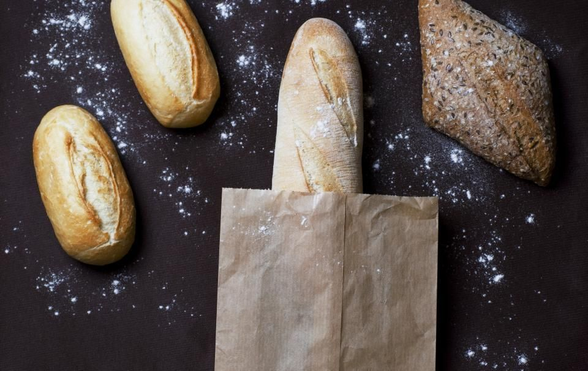
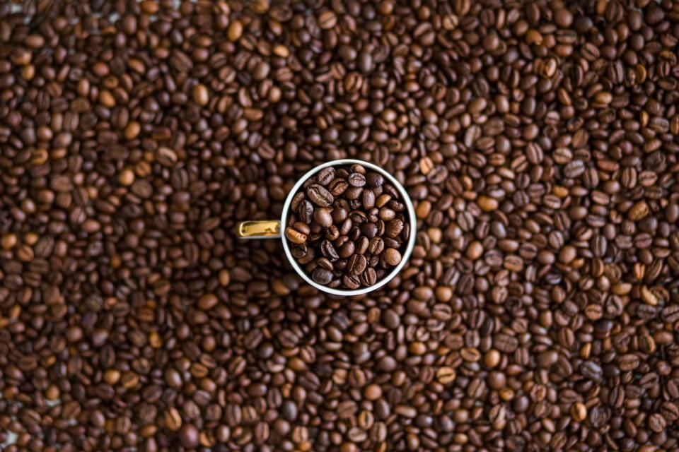

01 COFFEE
週に2回、焙煎する。
豆は店内で、週に2回焙煎します。焙煎したての香りを、一杯ずつ丁寧に淹れてお出しします。(見本の文章です)
02 SWEETS
毎朝、焼く。

ケーキや焼き菓子は、その日の朝に焼いたものだけをお出しします。甘さは控えめに、コーヒーに合う味にしています。
03 SPACE
ゆっくり、過ごせる席。

ソファ席、カウンター、テラス席。お一人でも、お友達とでも、お好きな席でお過ごしください。
写真・店舗名・内容はすべて見本用の架空のものです
Café Komorebi
自家焙煎のコーヒーと、焼きたての焼き菓子。
ご挨拶
住宅街の一角にある、席数14席の小さなカフェです。窓から入るやわらかな光のなかで、ゆっくり過ごしていただけたらと思っています。
豆は週に2回、店内で焙煎しています。お菓子は、毎朝焼くものだけ。散歩の途中にも、仕事の合間にも、どうぞ気軽にお立ち寄りください。
おすすめ

焙煎したての豆を、一杯ずつ丁寧に。
¥550毎朝焼く、やさしい甘さのケーキ。
¥600
モーニングにも、ランチにも。
¥450GALLERY




01 COFFEE
豆は店内で、週に2回焙煎します。焙煎したての香りを、一杯ずつ丁寧に淹れてお出しします。(見本の文章です)
02 SWEETS
ケーキや焼き菓子は、その日の朝に焼いたものだけをお出しします。甘さは控えめに、コーヒーに合う味にしています。
03 SPACE
ソファ席、カウンター、テラス席。お一人でも、お友達とでも、お好きな席でお過ごしください。
VOICE
「コーヒーの香りがよくて、ケーキもやさしい味でした。落ち着ける店です。」
30代・女性(イメージ例)「モーニングのパンが焼きたてで、朝から幸せな気分になりました。」
40代・男性(イメージ例)「窓際の席で、ゆっくり本を読めました。また行きたいです。」
20代・女性(イメージ例)ACCESS
お問い合わせ
000-0000-0000